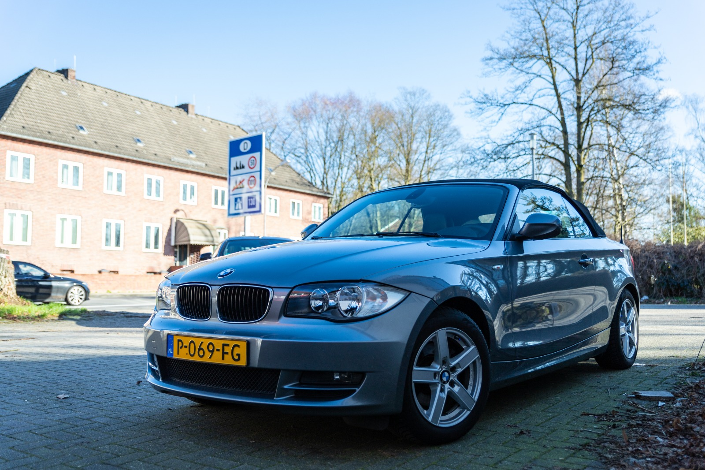

Vragen of opmerkingen? Stel ze via de link Contact Marco.
Bezoek de website van BMW club Twente. BMW CLUB TWENTE Voor BMW liefhebbers, door BMW liefhebbers.

De BMW Cabrio is in 2022 ingevoerd uit Duitsland. De km stand bij invoer bedroeg 66.000 km. De kleurcode is Space Grey. Verder heeft de auto een antraciet, zwart leren interieur en originele BMW 17 Inch 5-spaaks lichtmetalen velgen.
De E88 (cabrio aanduiding van de 1 serie) en de andere hatchback en coupe modellen, zijn de eerste generatie van de BMW 1-serie, een compacte middenklassenauto die ontworpen werd door Chris Bangle. De eerste variant, de 5-deurshatchback, werd in september 2004 gelanceerd om te concurreren met de Audi A3 en de Alfa Romeo 147. Het was de opvolger van de BMW 3-serie Compact. De 1-serie deelt het chassis met de E90 3-serie. Zoals bij BMW gebruikelijk is, heeft de wagen een voorin langsgeplaatste motor en achterwielaandrijving. De aandrijving van deze BMW bestaat uit een viercilinder 2 liter, 150 pk sterke motor met typeaanduiding N43.
De auto is in volledig originele staat.